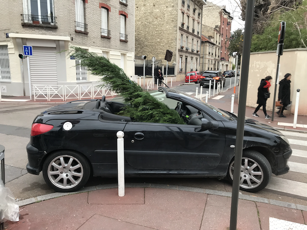

Meilleurs voeux pour 2024!

(Montrouge, December 2023)
- Electron, Electron, Raphael Roginski
- Three, Landscape, Louise Glück
- Professor Graves, Anamibia Sessions 1: The Wave, Melvin Gibbs
- Wenn Wir in Höchsten Nöten Sein, Bwv Anh. II 78: Var. V, Cut from Air, Fred Thomas
- Notebook for Anna Magdalena Bach, Bwv 988/1: Aria, Cut from Air, Fred Thomas
- Rainwater, Searchlight Moonbeam, Cheng Minjang
- Harvest Dance, Galo, O YAMA O
- Mwashah, Eclipse, Hamza El Din
- That Which Cannot Unwish Itself, Before We Lie Down in Darknesse, The Inward Circles
- déjà rêvé, Sept duos pour guitar acoustique et piano préparé, Stephen O'Malley, Anthony Pateras
- Speechless Lately, Slowly Forgetting, Barely Remembering, Martyna Basta
- Charybdis, Woodwind Multiples, Mary Jane Leach, Sam Dunscombe
- The Life Of Jesus, Jump On It, Bill Orcutt